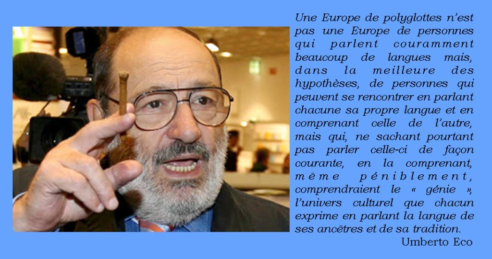
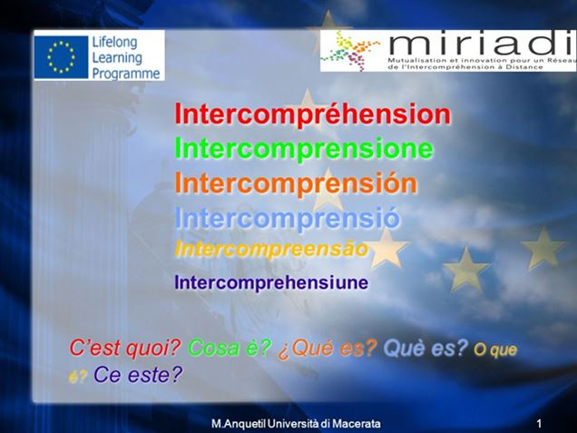
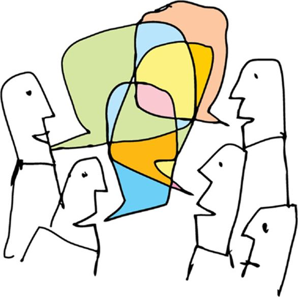

<!DOCTYPE html>
<html  >
<head>
  <!-- Site made with Mobirise Website Builder v5.0.29, https://mobirise.com -->
  <meta charset="UTF-8">
  <meta http-equiv="X-UA-Compatible" content="IE=edge">
  <meta name="generator" content="Mobirise v5.0.29, mobirise.com">
  <meta name="viewport" content="width=device-width, initial-scale=1, minimum-scale=1">
  <link rel="shortcut icon" href="assets/images/logo-1-128x128.png" type="image/x-icon">
  <meta name="description" content="Entre locuteurs de langues d’une même famille, par exemple les langues romanes, ou les langues slaves, ou les langues germaniques, chacun parle sa propre langue et comprend celle de l’autre.">
  
  
  <title>L’intercompréhension, qu’est-ce que c’est ?</title>
  <link rel="stylesheet" href="https://fonts.googleapis.com/css?family=Lora:400,700,400italic,700italic&subset=latin">
  <link rel="stylesheet" href="https://fonts.googleapis.com/css?family=Montserrat:400,700">
  <link rel="stylesheet" href="https://fonts.googleapis.com/css?family=Raleway:100,100i,200,200i,300,300i,400,400i,500,500i,600,600i,700,700i,800,800i,900,900i">
  <link rel="stylesheet" href="assets/web/assets/mobirise-icons2/mobirise2.css">
  <link rel="stylesheet" href="assets/et-line-font-plugin/style.css">
  <link rel="stylesheet" href="assets/tether/tether.min.css">
  <link rel="stylesheet" href="assets/bootstrap/css/bootstrap.min.css">
  <link rel="stylesheet" href="assets/dropdown/css/style.css">
  <link rel="stylesheet" href="assets/animatecss/animate.min.css">
  <link rel="stylesheet" href="assets/socicon/css/styles.css">
  <link rel="stylesheet" href="assets/theme/css/style.css">
  <link rel="preload" as="style" href="assets/mobirise/css/mbr-additional.css"><link rel="stylesheet" href="assets/mobirise/css/mbr-additional.css" type="text/css">
  
  
  
  
</head>
<body>

<!-- Analytics -->
<!-- Global site tag (gtag.js) - Google Analytics -->
<script async src="https://www.googletagmanager.com/gtag/js?id=UA-109039242-1"></script>
<script>
  window.dataLayer = window.dataLayer || [];
  function gtag(){dataLayer.push(arguments);}
  gtag('js', new Date());

  gtag('config', 'UA-109039242-1');
</script>
<!-- /Analytics -->


  
  <section id="menu-fo" data-rv-view="14957">

    <nav class="navbar navbar-dropdown bg-color transparent navbar-fixed-top">
        <div class="container">

            <div class="mbr-table">
                <div class="mbr-table-cell">

                    <div class="navbar-brand">
                        <a href="http://revuemethode.org" class="navbar-logo"></a>
                        <a class="navbar-caption" href="http://revuemethode.org">REVUE<br>MÉTHODE<br></a>
                    </div>

                </div>
                <div class="mbr-table-cell">

                    <button class="navbar-toggler pull-xs-right hidden-md-up" type="button" data-toggle="collapse" data-target="#exCollapsingNavbar">
                        <div class="hamburger-icon"></div>
                    </button>

                    <ul class="nav-dropdown collapse pull-xs-right nav navbar-nav navbar-toggleable-sm" id="exCollapsingNavbar"><li class="nav-item"><a class="nav-link link" href="numeros.html">TOUS LES NUMÉROS</a></li><li class="nav-item dropdown"><a class="nav-link link dropdown-toggle" data-toggle="dropdown-submenu" href="https://sf.donntu.org" aria-expanded="false">RUBRIQUES</a><div class="dropdown-menu"><a class="dropdown-item" href="politique-societe.html">Politique &amp; Société</a><a class="dropdown-item" href="culture.html">Culture</a><a class="dropdown-item" href="histoire.html">Histoire</a><a class="dropdown-item" href="sciences-techniques.html">Sciences &amp; Techniques</a><a class="dropdown-item" href="donbass.html">Donbass</a><a class="dropdown-item" href="france.html">France</a><a class="dropdown-item" href="russie.html">Russie</a><a class="dropdown-item" href="sante-gastronomie.html">Santé &amp; Gastronomie</a></div></li><li class="nav-item dropdown"><a class="nav-link link" href="equipe.html" aria-expanded="false">NOTRE ÉQUIPE</a></li><li class="nav-item"><a class="nav-link link" href="recommandations.html">NOS RECOMMANDATIONS</a></li><li class="nav-item nav-btn"><a class="nav-link btn btn-white btn-white-outline" href="#bottom">ABONNEMENT</a></li></ul>
                    <button hidden="" class="navbar-toggler navbar-close" type="button" data-toggle="collapse" data-target="#exCollapsingNavbar">
                        <div class="close-icon"></div>
                    </button>

                </div>
            </div>

        </div>
    </nav>

</section>

<!--<section class="engine"><a href="https://mobirise.info/e">how to make a website</a></section>--><section class="mbr-section article mbr-after-navbar" id="msg-box8-fp" data-rv-view="14959" style="background-image: url(assets/images/logo-mini-723x161.jpg); padding-top: 120px; padding-bottom: 40px;">

    
    <div class="container">
        <div class="row">
            <div class="col-md-8 col-md-offset-2 text-xs-center">
                <h3 class="mbr-section-title display-2">JANVIER 2017</h3>
                
                
            </div>
        </div>
    </div>

</section>

<section class="mbr-section mbr-section__container article" id="header3-fq" data-rv-view="14962" style="background-color: rgb(255, 255, 255); padding-top: 20px; padding-bottom: 0px;">
    <div class="container">
        <div class="row">
            <div class="col-xs-12">
                <h3 class="mbr-section-title display-2">L’intercompréhension, qu’est-ce que c’est ?</h3>
                <p class="mbr-section-subtitle">par Véronique LIKFORMAN<a href="tran-huu.html" class="text-danger"></a><a href="vanneste.html" class="text-danger"></a><a href="mirkovic.html" class="text-danger"></a><a href="vadi.html" class="text-danger"></a><a href="bonnal.html" class="text-danger"></a><a href="leroy.html" class="text-danger"></a><a href="bechet-golovko.html" class="text-danger"></a><a href="pietrini.html" class="text-danger"></a><a href="compoint.html" class="text-danger"></a><a href="mas.html" class="text-danger"></a><a href="cerdan.html" class="text-danger"></a><a href="bret.html" class="text-danger"></a><a href="buton.html" class="text-danger"></a><a href="gichkina.html" class="text-danger"></a><a href="vadi.html" class="text-danger"></a><a href="gichkina.html" class="text-danger"></a><a href="mogniat.html" class="text-danger"></a><a href="menut.html" class="text-danger"></a><a href="tran-huu.html" class="text-danger"></a><a href="maurice.html" class="text-danger"></a><a href="bechet-golovko.html" target="_blank" class="text-danger"></a><a href="tran-huu.html" target="_blank" class="text-danger"></a><a href="brisset.html" class="text-danger"></a><a href="pietrini.html" class="text-danger"></a><a href="artamonov.html" class="text-danger"></a><a href="pietrini.html" class="text-danger"></a><a href="maurice.html" class="text-danger"></a><a href="menut.html" class="text-danger"></a><a href="bonnal.html" class="text-danger"></a><a href="vanneste.html" class="text-danger"></a><a href="bret.html" class="text-danger"></a><a href="popova-bonnal.html" class="text-danger"></a><a href="buton.html" class="text-danger"></a><a href="bonnal.html" class="text-danger"></a><a href="mogniat.html" class="text-danger"></a><a href="menut.html" class="text-danger"></a><a href="tran-huu.html" class="text-danger"></a><a href="maurice.html" class="text-danger"></a><a href="ferreira.html" class="text-danger"></a><a href="vanneste.html" class="text-danger"></a><a href="bonnal.html" class="text-danger"></a><a href="maurice.html" class="text-danger"></a><a href="tran-huu.html" class="text-danger"></a><a href="brisset.html" class="text-danger"></a><a href="compoint.html" class="text-danger"></a><a href="bechet-golovko.html" class="text-danger"></a><a href="latsa.html" class="text-danger"></a><a href="leroy.html" class="text-danger"></a><a href="latsa.html" class="text-danger"></a><a href="pietrini.html" class="text-danger"></a><a href="artamonov.html" class="text-danger"></a><a href="pietrini.html" class="text-danger"></a><a href="compoint.html" class="text-danger"></a><a href="tchernine.html" class="text-danger"></a><a href="sydorova.html" class="text-danger"></a><a href="guigue.html" class="text-danger"></a><a href="vanneste.html" class="text-danger"></a><a href="bechet-golovko.html" class="text-danger"></a><a href="bret.html" class="text-danger"></a><a href="buton.html" class="text-danger"></a><a href="mogniat.html" class="text-danger"></a></p><BR>
            </div>
        </div>
    </div>
</section>

<section class="mbr-section mbr-section__container" id="image2-fr" data-rv-view="14964" style="background-color: rgb(255, 255, 255); padding-top: 0px; padding-bottom: 0px;">
    <div class="container">
        <div class="row">
            <div class="col-xs-12">
                <figure class="mbr-figure">
                    <div></div>

                    

                </figure>
            </div>
        </div>
    </div>
</section>

<section class="mbr-section article mbr-section__container" id="content1-fs" data-rv-view="14966" style="background-color: rgb(255, 255, 255); padding-top: 20px; padding-bottom: 20px;">

    <div class="container">
        <div class="row">
            <div class="col-xs-12 lead"><p>Entre locuteurs de langues d’une même famille, par exemple les langues romanes, ou les langues slaves, ou les langues germaniques, chacun parle sa propre langue et comprend celle de l’autre.</p><p>Tous, nous pratiquons plus ou moins l’intercompréhension ; quand c’est nécessaire, nous mettons en place des stratégies pour comprendre en nous servant du contexte. Quelques heures suffisent pour observer les nombreuses similitudes entre langues d’une même famille, similitudes qui ne se limitent pas aux mots de même origine.</p><p>Nul besoin d’être linguiste ou grammairien, ni de parler déjà une autre ou d’autres langues. Être bon lecteur facilite la compréhension – comme dans la langue maternelle&nbsp;!&nbsp;–&nbsp;mais chacun adoptera et adaptera les méthodes qui lui conviennent. L’intercompréhension fonctionne très bien à l’oral, même s’il est plus simple souvent de commencer par l’écrit.&nbsp;</p><p><br></p><h3><figure class="cl3"></figure>Comment s’initier à l’intercompréhension</h3><p><span style="font-size: 1.07rem; line-height: 1.5;">Facilement&nbsp;: le plus difficile est de modifier&nbsp;notre&nbsp;approche, et de remettre en cause les méthodes traditionnelles d’apprentissage des langues, qui préconisent un cloisonnement des langues et des compétences linguistiques (Pierre Janin) :</span><br></p><p><br></p><ul><li>Le terme consacré «&nbsp;parler une langue&nbsp;» n’exprime qu’une seule des compétences comprendre&nbsp;/&nbsp;s’exprimer&nbsp;/&nbsp;écrit&nbsp;/&nbsp;oral – et sous-entend que c’est la plus importante, de façon arbitraire.</li></ul><p><br></p><ul><li>Ces compétences comprendre l’écrit&nbsp;-&nbsp;l’oral&nbsp;/&nbsp;s’exprimer&nbsp;à&nbsp;l’écrit&nbsp;-&nbsp;à l’oral ne sont pas indissociables.&nbsp;</li></ul><p><br></p><ul><li>Comprendre et traduire sont deux activités distinctes&nbsp;; on peut comprendre un texte, écrit dans une langue étrangère, qu’on serait bien en peine de traduire correctement&nbsp;– de même qu’on peut lire, comprendre un texte écrit dans notre langue maternelle, sans pour autant être tous capables de le récrire sous une autre forme.</li></ul><p><br></p><p>La traduction, comme l’écriture, est un exercice ardu&nbsp;! Comprendre est beaucoup plus facile.&nbsp;</p><p><br></p><p>Avec l’IC, chacun progresse à son rythme, selon ses objectifs, peut commencer par lire des articles de journaux, ou tout texte concernant un domaine professionnel, ou autre.&nbsp;</p><p><figure class="g1"></figure>On peut choisir de se servir des ressources en ligne pour progresser plus vite, chercher ce qu’on ne comprend pas&nbsp;; ou préférer lire le plus possible en acceptant de ne pas tout comprendre – parfois très peu&nbsp;!&nbsp;– au début&nbsp;: devant un mot inconnu dans leur propre langue, certains cherchent dans le dictionnaire, d'autres continuent la lecture, selon ce qui leur réussit le mieux.</p><p>En se concentrant sur ce que l’on comprend, on saisira l’essentiel.</p><p>Avec de l’entraînement, et quelques connaissances de syntaxe et de grammaire vite acquises en comparaison du temps nécessaire pour un apprentissage traditionnel, les progrès sont spectaculaires.&nbsp;</p><p>À l’oral, ce sera sans doute plus difficile pour beaucoup&nbsp;; pourtant le principe est le même&nbsp;: regarder des films en VO non sous-titrés, s’entraîner en profitant des multiples possibilités qu’offre internet (y compris ralentir, arrêter, réécouter... ).</p><p><br></p><p><strong>Pour résumer&nbsp;:&nbsp;</strong></p><p>Il ne s’agit pas d’apprendre une langue, mais de comprendre une langue.</p><p>Pour débuter, choisir des textes, des articles sur des sujets familiers, et se demander ce qui est compris.&nbsp;</p><p>Se servir avant tout de ses propres habitudes de lecteur, de ses connaissances, ses capacités, éventuellement des ressources citées plus bas (exemples sur la page : <a href="http://dlf-bruxelles.eu/?page_id=2815" target="_blank">http://dlf-bruxelles.eu/?page_id=2815</a>).</p><p><br></p><h3>Les avantages de l’intercompréhension</h3><p><span style="font-size: 1.07rem; line-height: 1.5;">Quel que soit le but recherché, les chiffres sont éloquents&nbsp;: on estime à plus ou moins 10&nbsp;000 heures le temps d’apprentissage classique d’une langue pour atteindre un bon niveau, de trente à cinquante heures le temps nécessaire pour acquérir les compétences d’intercompréhension, sachant que ces compétences vont servir pour les autres langues d’une même famille.</span><br></p><p><br></p><p>Comprendre des textes en version originale dans plusieurs langues, c’est déjà bien au-delà des ambitions de la plupart d’entre nous… Mais si on veut aller plus loin, l’acquis de la compétence compréhension permettra d’avancer plus vite dans l’apprentissage de la langue.</p><p><br></p><p>L'étude traditionnelle des langues donne de mauvaises habitudes, craindre les erreurs, confondre ne pas tout comprendre et ne rien comprendre, commencer par éléments séparés. Avec l’intercompréhension, on aborde une langue dans son ensemble de façon intuitive, au plus près des conditions d’un natif&nbsp;: à terme, on en saisira mieux les nuances et le «&nbsp;génie&nbsp;», l’univers culturel évoqués par Umberto Eco.</p><p><br></p><p>Parmi les avantages, et non des moindres, l’IC nous incite à nous exprimer clairement dans notre propre langue, à tenir compte de l’interlocuteur pour en être compris –&nbsp;à une attitude respectueuse de l’autre qui ne saurait nuire, en toute circonstance.</p><p><br></p><p><br></p><h3><figure class="d2"></figure>Historique</h3><p><span style="font-size: 1.07rem; line-height: 1.5;">…[l’intercompréhension] est ancrée sur des pratiques réelles, naturelles des individus depuis des siècles…</span><br></p><p>L’intercompréhension date probablement de l’apparition du langage, depuis un siècle elle est nommée, depuis des décennies des universitaires, des linguistes ont accompli un travail remarquable¹. Tous les spécialistes sont d’accord : l’IC, ça marche !</p><p>Pourtant, malgré les résultats positifs beaucoup doutent de son intérêt puisque après tant d’années l’intercompéhension peine à se généraliser. C’est prendre le problème à l’envers : il manquait une réelle volonté politique de la faire connaître, l’IC est restée longtemps confidentielle et réservée aux initiés.</p><p><br></p><pre>C’est comme une schizophrénie collective. Une banalisation de l’omniprésence de l’anglais a un effet de légitimation de cette langue, et les pays européens, par bien des décisions, alimentent ce mouvement. Mais dans le même temps, le discours officiel continue de célébrer les beautés du plurilinguisme. (François Grin.)</pre><p><br></p><p>Aujourd’hui, l’intercompréhension pourrait bien constituer une stratégie providentielle pour sauver le plurilinguisme européen … l’intercompréhension est «&nbsp;un rêve à portée de main&nbsp;». Et à portée de tous.</p><p><br></p><h3>Pourquoi maintenant&nbsp;?</h3><p><span style="font-size: 1.07rem; line-height: 1.5;">D’une part, depuis quelques années des organisations et des institutions ont décidé de la promouvoir, ont mis en place des outils pédagogiques efficaces – bientôt pour d’autres familles de langues, germaniques et slaves.&nbsp;</span><br></p><p>L’UE soutient les initiatives, la Commission européenne finance la promotion de l’IC qui commence à être davantage connue, grâce à l’OIF*, la DGLFLF**, à diverses associations (l’APIC***, l’OEP**** entre autres).</p><p>D’autre part, conséquence collatérale du Brexit, l’anglais, toujours langue officielle² mais devenu langue maternelle très minoritaire en Europe, a si possible encore moins de légitimité à occuper tout l’espace linguistique.</p><p>Tout a été dit sur les méfaits du globish&nbsp;; quant à la traduction langue de l’Europe, c’est indispensable mais insuffisant&nbsp;: la traduction, l’interprétariat ne permettent pas de se parler directement. Il existe une solution, non pas la solution, mais un apport précieux à la traduction et à la connaissance approfondie d’une ou deux langues –&nbsp;un maximum pour le commun des mortels&nbsp;–, c’est l’intercompréhension.</p><p>Les outils sont prêts, à notre disposition; ce serait grand dommage de ne pas s’en servir.</p><p><br></p><h3>Les ressources sur internet</h3><p><span style="font-size: 1.07rem; line-height: 1.5;">Peut-être l’une des raisons des difficultés de l’intercompréhension à s’imposer : on trouve de très nombreux documents sur le sujet, mais le plus souvent destinés aux spécialistes&nbsp;; les ressources s’adressent dans leur presque totalité aux professeurs.&nbsp;</span><br></p><p><br></p><p>Si rien n’empêche de commencer seul (l’IC a longtemps été pratiquée de façon empirique), pour trouver des ressources accessibles&nbsp;:&nbsp;</p><p><br></p><ul><li>Complet et incontournable, le rapport de la DGLFLF pour tout savoir sur l’IC, avec une bibliographie complète ; PDF : dglflf-intercomprehension-2016 (<a href="http://dlf-bruxelles.eu/wp-content/uploads/2016/11/DGLFLF-Intercomprehension-2016-1.pdf" target="_blank">http://dlf-bruxelles.eu/wp-content/uploads/2016/11/DGLFLF-Intercomprehension-2016-1.pdf</a>).</li></ul><p><br></p><ul><li>Miriadi (<a href="https://www.miriadi.net" target="_blank">https://www.miriadi.net</a>) - Destiné aux enseignants, des pistes pour tous sur le site.</li></ul><p><br></p><ul><li>Pratique et ludique, avec le soutien de la Commission européenne : <a href="http://www.eu-intercomprehension.eu/indexfr.html" target="_blank">http://www.eu-intercomprehension.eu/indexfr.html</a> (Pierre Escudé, IUFM Toulouse, concepteur, coordonnateur et contact d’euro-mania).</li></ul><p><br></p><ul><li>ou encore l’Union latine : <a href="http://www.intercomprehension.eu/modules/intercom_new/template.php?module=0&langID=fr&w_langID=au" target="_blank">http://www.intercomprehension.eu/modules/intercom_new/template.php?module=0&amp;langID=fr&amp;w_langID=au</a>.</li></ul><p><br></p><ul><li>Pour mieux comprendre comment l’IC fonctionne en termes clairs et accessibles, et des propositions pour l’enseignement scolaire&nbsp;(le contenu va au-delà du titre) un article de Filomena Capucho : L’intercompréhension est-elle une mode&nbsp;? <a href="http://pratiques.revues.org/1252" target="_blank">http://pratiques.revues.org/1252</a>.</li></ul><p><br></p><ul><li>Pour imaginer une Commission européenne qui pratiquerait l’intercompréhension et un plurilinguisme vivant, juste et soutenable en mettant sur un pied d‘égalité toutes les langues européennes à un coût modeste : Rencontre avec François Grin, Genève fr-grin (<a href="http://dlf-bruxelles.eu/wp-content/uploads/2016/11/Fr.-Grin-.pdf" target="_blank">http://dlf-bruxelles.eu/wp-content/uploads/2016/11/Fr.-Grin-.pdf</a>)</li></ul><p><br></p><ul><li>Pour les enfants (futurs plurilingues !) – et les professeurs – en s’inscrivant sur le site <a href="http://www.euro-mania.eu/index.php?option=com_frontpage&Itemid=1" target="_blank">http://www.euro-mania.eu/index.php?option=com_frontpage&amp;Itemid=1</a></li></ul><p><em>N.B. : l’initiation est excellente, l’ergonomie du site au début un peu moins… ne pas renoncer, la gran expansión est au bout du chemin. &nbsp;&nbsp;&nbsp;(Commencer par s’inscrire, puis une fois l’inscription validée, cliquer tout en bas de la page sur Module 1 : Le mystère du mormoloc&nbsp;; tous les modules seront alors accessibles.) - Manuel à acheter (15 €).</em></p><p><br></p><ul><li>ou&nbsp;: <a href="http://www.unilat.org/DPEL/Intercomprehension/Itineraires_romans/fr" target="_blank">http://www.unilat.org/DPEL/Intercomprehension/Itineraires_romans/fr</a> immédiatement accessible ; les enfants comprendront plus vite que les adultes qu’il faut cliquer sur les personnages pour qu’ils parlent.</li></ul><p><br></p><ul><li>L’OIF avait lancé un CLOM (cours en ligne ouvert à tous et massif) en novembre 2015, puis avril 2016, destiné aux enseignants désireux d’appliquer l’IC dans leurs classes ; cependant il était ouvert à tous. Efficace : ce CLOM sera reconduit en 2017, à ne pas manquer.</li></ul><p>Présentation du CLOM :</p><p><a href="https://www.youtube.com/watch?v=Gn5BvzHX2WAEurocom5" target="_blank">https://www.youtube.com/watch?v=Gn5BvzHX2WAEurocom5</a></p><p>depliant_clom_
(<a href="http://dlf-bruxelles.eu/wp-content/uploads/2016/11/depliant_clom_pour_web_version_legere.pdf" target="_blank">http://dlf-bruxelles.eu/wp-content/uploads/2016/11/depliant_clom_pour_web_version_legere.pdf</a>).</p><p><br></p><ul><li>À regarder – écouter – le témoignage d’un entrepreneur, peu enthousiaste quand il a entendu parler de l’IC. Après en avoir fait l’expérience, il dit ce que tous les spécialistes répètent : …certains réseaux professionnels, comme le réseau international de la Cité des métiers … préfèrent aujourd’hui y avoir recours plutôt que d’utiliser l’anglais comme lingua franca. Les résultats positifs de ce choix ont été immédiatement perceptibles … l’intercompréhension … en introduisant plus de réciprocité et en facilitant l’autonomie,… modifie les comportements et attitudes dans les échanges de manière extrêmement bénéfique. (Pierre Janin) <a href="https://www.youtube.com/watch?v=hvSH6MjmGU0" target="_blank">https://www.youtube.com/watch?v=hvSH6MjmGU0</a>.</li></ul><p><br></p><h3><figure class="d1"></figure>Eurocom, qu’en est-il&nbsp;?</h3><p><span style="font-size: 1.07rem; line-height: 1.5;">Eurocomrom a lancé le projet pour les langues romanes, avec des cours, de nombreuses ressources, des exemples <a href="http://www.atelierdeslangues.ch/module/2/1/4" target="_blank">http://www.atelierdeslangues.ch/module/2/1/4</a></span><br></p><p>En ce qui concerne Eurocomgerm et Eurocomslave, il semble qu’il faut patienter ; ce qui était prévu :</p><p>EuroCom est une nouvelle stratégie qui doit donner aux Européens une possibilité réaliste de multilinguisme.</p><p>EuroCom … montre que l’on peut désormais, dès les premières heures d’entraînement et sans apprentissage supplémentaire, comprendre un texte non seulement dans une langue, mais dans dix autres (des branches linguistiques germanique, romane et slave)… Au final, un réseau d’ateliers EuroCom compatibles devrait permettre de rassembler les langues des trois grandes familles linguistiques d’Europe et ouvrir l’accès aux langues à la majeure partie des 700 millions d’Européens.</p><p><br></p><ul><li>Les langues romanes pour EuroComRom (catalan, espagnol, français, italien, portugais, roumain).</li><li>Les langues germaniques pour EuroComGerm (allemand, anglais, néerlandais, danois, norvégien, islandais et suédois).</li><li>Le volet EuroComSlave.</li></ul><p><br></p><h3>Un aperçu de l’IC dans le monde :</h3><ul><li><span style="font-size: 1.07rem; line-height: 1.5;">L’Union latine avait lancé un programme de formation, en Europe, en Amérique latine, en Afrique, <a href="http://www.unilat.org/DPEL/Intercomprehension/Formations/fr" target="_blank">http://www.unilat.org/DPEL/Intercomprehension/Formations/fr</a>&nbsp;</span><br></li></ul><p>L’Union latine a hélas été dissoute en 2012, dans l’indifférence générale malgré le travail accompli (voir plus haut le site destiné à l’IC pour les enfants, toujours en ligne).</p><p><br></p><ul><li>L’intercompréhension dans le monde arabe : expérience didactique à l’Université Paris-Sorbonne Abou Dhabi <a href="http://ic2014.miriadi.net/wp-content/uploads/2013/09/24.Colombo-Dupont.pdf" target="_blank">http://ic2014.miriadi.net/wp-content/uploads/2013/09/24.Colombo-Dupont.pdf</a></li></ul><p><br></p><ul><li>L’intercompréhension entre&nbsp;langues scandinaves est favorisée depuis longtemps au Danemark, en Norvège et en Suède (les Scandinaves ont la réputation d’être polyglottes ; peut-être y a-t-il un lien de cause à effet).</li></ul><p><br></p><ul><li>L’intercompréhension entre langues africaines&nbsp;:
100 millions de personnes environ parlent une langue appartenant à la famille des langues bantoues, en RDC, au Congo Brazzaville et en Angola. Les locuteurs de ces trois langues bantoues peuvent utiliser les mêmes stratégies d’intercompréhension que des locuteurs francophones pour les langues romanes. (Lay Thsiala et&nbsp;Valérie Hutter – Université de Genève).</li></ul><p><br></p><ul><li>Au Québec</li></ul><p><figure class="g4"></figure>À lire, Jean-Baptiste Nadeau <a href="http://www.ledevoir.com/societe/actualites-en-societe/476243/pour-l-intercomprehension" target="_blank">http://www.ledevoir.com/societe/actualites-en-societe/476243/pour-l-intercomprehension</a></p><p><br></p><p><br></p><p><br></p><p><br></p><p><br></p><p><br></p><p><strong>V.L.</strong><br></p><p><br></p><p>¹ Claire Blanche-Benveniste, Bernard Quemada… Impossible de les citer tous : vous les retrouverez dans les liens, documents et formations, ou au gré de vos propres recherches.</p><p><br></p><p>² Rien n’est très clair à commencer par la notion de langues officielles, de travail, de représentation (d’après un rapport de l’assemblée nationale de 2003&nbsp;: toutes les langues officielles sont des langues de travail… du moins en théorie), et les informations sont&nbsp;contradictoires. Si l’on en croit les sites de la Commission et du&nbsp;Parlement européens, l’anglais restera une langue officielle de&nbsp;l’Europe après le Brexit : à suivre.</p><p><br></p><p>*OIF : Organisation internationale de la Francophonie</p><p>** DGLFLF : Délégation générale à la langue française et aux langues de France&nbsp;</p><p>*** APIC : association pour la promotion de l’intercompréhension</p><p>****OEP : Observatoire européen du plurilinguisme</p><p></p></div>
        </div>
    </div>

</section>

<section class="mbr-section mbr-section__container" id="buttons1-ft" data-rv-view="14968" style="background-color: rgb(255, 255, 255); padding-top: 20px; padding-bottom: 0px;">

    <div class="container">
        <div class="row">
            <div class="col-xs-12">
                <div class="text-xs-center"><a class="btn btn-danger" href="http://fr.calameo.com/read/0011275147e6bfcd72df7" target="_blank">Regarder ce numéro</a> <a class="btn btn-black btn-black-outline" href="http://revuemethode.org/pdf/sf0117.pdf" target="_blank">Télécharger ce numéro</a></div>
            </div>
        </div>
    </div>

</section>

<section class="mbr-section mbr-section-md-padding" id="social-buttons1-fu" data-rv-view="14970" style="background-color: rgb(255, 255, 255); padding-top: 30px; padding-bottom: 30px;">
    
    <div class="container">
        <div class="row">
            <div class="col-md-8 col-md-offset-2 text-xs-center">
                <h3 class="mbr-section-title display-2">Partager cette page</h3>
                <div>

                  <div class="mbr-social-likes" data-counters="false">
                    <span class="btn btn-social facebook" title="Share link on Facebook">
                        <i class="socicon socicon-facebook"></i>
                    </span>
                    <span class="btn btn-social twitter" title="Share link on Twitter">
                        <i class="socicon socicon-twitter"></i>
                    </span>
                    <span class="btn btn-social plusone" title="Share link on Google+">
                        <i class="socicon socicon-googleplus"></i>
                    </span>
                    <span class="btn btn-social vkontakte" title="Share link on VKontakte">
                        <i class="socicon socicon-vkontakte"></i>
                    </span>
                    <span class="btn btn-social odnoklassniki" title="Share link on Odnoklassniki">
                        <i class="socicon socicon-odnoklassniki"></i>
                    </span>
                  </div>

                </div>
            </div>
        </div>
    </div>
</section>

<section class="mbr-section form2" id="form2-fv" data-rv-view="14972" style="background-color: rgb(46, 46, 46); padding-top: 40px; padding-bottom: 40px;">
        
    <div class="mbr-section mbr-section__container mbr-section__container--middle">
        <div class="container">
            <div class="row">
                <div class="col-xs-12 text-xs-center">
                    <h3 class="mbr-section-title display-2">S'abonner à « Méthode »</h3>
                    <p class="mbr-section-subtitle"><br>Saisissez votre adresse mail dans l'espace ci-dessous : c'est gratuit et sans engagement<br></p>
                </div>
            </div>
        </div>
    </div>
    <div class="mbr-section mbr-section-nopadding">
        <div class="container">
            <div class="row">
                <div class="col-xs-12 col-lg-10 col-lg-offset-1" data-form-type="formoid">
                    <div data-form-alert="true"><div hidden="" data-form-alert-success="true">Merci pour votre inscription !</div></div>
                    <form class="mbr-form" action="https://mobirise.com/" method="post" data-form-title="S'abonner à « Méthode »">
                        <input type="hidden" value="ASvRBMDzMpeOrmz9TGu/GuVW9dhS9nRr82j7tFr68jUV7/IT/h+u5CizMqwAxTglzNEjhN2+FTy9/iSv0tVdaAyLuXNcUEj1rMk+VfMM6bKvsjP2pR3Swlv7EuEjLHfn" data-form-email="true">
                        <div class="mbr-subscribe mbr-subscribe-dark input-group">
                            <input type="email" class="form-control" name="email" required="" data-form-field="Email" placeholder="Entrer votre courriel" id="form2-fv-email">
                            <span class="input-group-btn"><button type="submit" class="btn btn-danger">S'ABONNER</button></span>
                        </div>
                    </form>
                </div>
            </div>
        </div>
    </div>
</section>

<section class="mbr-section mbr-section__container article" id="header3-fw" data-rv-view="14978" style="background-color: rgb(46, 46, 46); padding-top: 0px; padding-bottom: 0px;">
    <div class="container">
        <div class="row">
            <div class="col-xs-12">
                <h3 class="mbr-section-title display-2">Nous contacter</h3>
                
            </div>
        </div>
    </div>
</section>

<section class="mbr-footer mbr-section mbr-section-md-padding" id="contacts3-fx" data-rv-view="14980" style="background-color: rgb(46, 46, 46); padding-top: 30px; padding-bottom: 30px;">


    <div class="row">
    
            <div class="mbr-company col-xs-12 col-md-6 col-lg-3">

                <div class="mbr-company card">
                    <div><a href="http://revuemethode.org" target="_blank"></a></div>
                    <div class="card-block">
                        <p class="card-text"><strong>REVUE&nbsp;MÉTHODE</strong><br><br><a href="http://revuemethode.org">http://revuemethode.org</a></p>
                    </div>
                    <ul class="list-group list-group-flush">
                        <li class="list-group-item">
                            <span class="list-group-icon"><span class="mobi-mbri mobi-mbri-users mbr-iconfont-company-contacts3"></span></span>
                            <span class="list-group-text"><p>Fédération des Instituts franco-russes<br></p></span>
                        </li>
                        <li class="list-group-item">
                            <span class="list-group-icon"><span class="mobi-mbri mobi-mbri-users mbr-iconfont-company-contacts3"></span></span>
                            <span class="list-group-text"><p>Федерация Франко-русских институтов<a href="https://www.google.fr/maps/place/Artema+St,+58,+Donetsk,+Donetsk+Oblast,+Ukraine/@47.9938898,37.8021051,17z/data=!3m1!4b1!4m5!3m4!1s0x40e090f8a2b877ad:0xdbef3b88de9747e8!8m2!3d47.9938898!4d37.8042938" target="_blank"></a></p></span>
                        </li>
                        <li class="list-group-item active">
                            <span class="list-group-icon"><span class="etl-icon icon-envelope mbr-iconfont-company-contacts3"></span></span>
                            <span class="list-group-text"><p><a href="mailto:revuemethode@gmail.com" target="_blank">revuemethode@gmail.com</a></p><p><a href="mailto:support@mobirise.com"></a></p></span>
                        </li>
                    </ul>
                </div>

            </div>
            <div class="mbr-footer-content col-xs-12 col-md-6 col-lg-3">
                <h4>Réseaux sociaux</h4>
                <ul><p></p><li><a href="https://www.facebook.com/revuemethode" target="_blank">Facebook</a></li><li><a href="https://vk.com/revuemethode" target="_blank">Vkontakte</a></li><li><a href="https://twitter.com/revuemethode" target="_blank">Twitter</a></li><p><br></p><strong>Nous rejoindre</strong><br><p><span style="line-height: 1.8;">Vous souhaitez devenir rédacteur pour « Méthode » ? Vous aimez nos publications et souhaitez nous rejoindre comme rédacteur de « Méthode », il vous suffit de nous adresser vos coordonnées, un bref curriculum vitae ainsi que les sujets que vous souhaiteriez aborder dans les prochaines publications. Bienvenue parmi l'équipe... !</span><br></p><p><br></p></ul>
            </div>
            <div class="mbr-footer-content col-xs-12 col-md-6 col-lg-3">
                <p></p><p><strong>Qui</strong>&nbsp;<strong>sommes-nous</strong>&nbsp;<strong>?</strong><br>Revue officielle des Instituts franco-russes, « MÉTHODE » a pour but premier le partage des cultures russe et française. Elle s'attache toutefois à être également une revue généraliste en traitant de tous les sujets de société. 
<br>Le nom  MÉTHODE  est usité par les scientifiques, par les sociologues, par les philosophes et par les musiciens ou encore dans le théâtre. Enfin le prénom Méthode est celui  de l’évêque de Sirmium ordonné par le pape Adrien II, qui avec son frère Cyril sont connus comme « les Apôtres des Slaves » et reconnus comme saints patrons de l’Europe. Autant de raisons qui nous font espérer que chacun se reconnaisse dans cette publication. 
<br>L'équipe de rédaction de « MÉTHODE »  est composée uniquement de rédacteurs bénévoles, pour la plupart experts reconnus dans leur domaine d'activité auxquels se sont joints plusieurs journalistes spécialisés.<br><strong></strong></p><p></p>
            </div>
            <div class="col-xs-12 col-md-6 col-lg-3" data-form-type="formoid">

                <div data-form-alert="true">
                    <div hidden="" data-form-alert-success="true">Merci pour votre message !</div>
                </div>

                <form action="https://mobirise.com/" method="post" data-form-title="MESSAGE">

                    <input type="hidden" value="x5fzLBWKLPK6RKS9UrEMtadVJY4hmmwWQgmDUOpEzfMjzPJEQGs6VWGY1CYx4yuSX2794GUEIguhDY2DH/EgHKuJXuQX0OxV2eVRNEuwqEegtFDUPZnDrwgRtz/N6LqL" data-form-email="true">

                    <div class="form-group">
                        <label class="form-control-label" for="contacts3-fx-name">Prénom et nom<span class="form-asterisk">*</span></label>
                        <input type="text" class="form-control input-sm input-inverse" name="name" required="" data-form-field="Name" id="contacts3-fx-name">
                    </div>

                    <div class="form-group">
                        <label class="form-control-label" for="contacts3-fx-email">Courriel<span class="form-asterisk">*</span></label>
                        <input type="email" class="form-control input-sm input-inverse" name="email" required="" data-form-field="Email" id="contacts3-fx-email">
                    </div>

                    

                    <div class="form-group">
                        <label class="form-control-label" for="contacts3-fx-message">Message</label>
                        <textarea class="form-control input-sm input-inverse" name="message" data-form-field="Message" rows="5" id="contacts3-fx-message"></textarea>
                    </div>

                    <div><button type="submit" class="btn btn-sm btn-black">Envoyer</button></div>

                </form>

            </div>
        </div>
</section>

<footer class="mbr-small-footer mbr-section mbr-section-nopadding" id="footer1-fy" data-rv-view="14989" style="background-color: rgb(50, 50, 50); padding-top: 0.875rem; padding-bottom: 0.875rem;">
    
    <div class="container text-xs-center">
        <p>Copyright (c) 2021 <a href="http://revuemethode.org">Revue Méthode</a>.</p>
    </div>
</footer>


  <script src="assets/web/assets/jquery/jquery.min.js"></script>
  <script src="assets/tether/tether.min.js"></script>
  <script src="assets/web/assets/bootstrap4-migrate/bootstrap.min.js"></script>
  <script src="assets/smooth-scroll/smooth-scroll.js"></script>
  <script src="assets/dropdown/js/script.min.js"></script>
  <script src="assets/touch-swipe/jquery.touch-swipe.min.js"></script>
  <script src="assets/viewport-checker/jquery.viewportchecker.js"></script>
  <script src="assets/social-likes/social-likes.js"></script>
  <script src="assets/theme/js/script.js"></script>
  <script src="assets/formoid/formoid.min.js"></script>
  
  
  
  <input name="animation" type="hidden">
  </body>
</html>